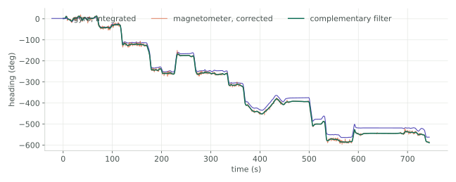
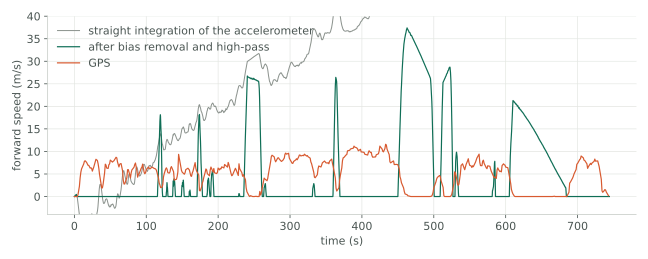
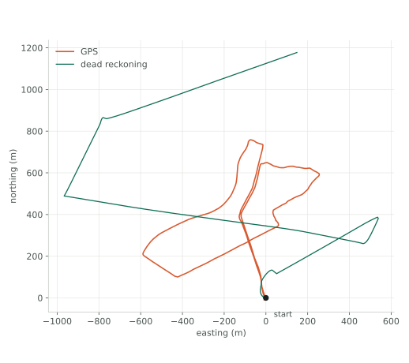

Drivers first, then calibration, then a drive with everything recording, then the question the whole thing is really about: with the satellites switched off, how long can the inertial sensors alone tell you where you are?
The plots below were regenerated from the original bag files, so they are the measurements, not a redrawing of them.
Getting the data off the sensors
Both drivers are mine. The GNSS one opens the serial port, filters for
$GPGGA sentences, converts the degree-minute latitude and
longitude into decimal degrees, applies the sign from the hemisphere
letters, projects to UTM and publishes it with the fix quality and HDOP
alongside. The IMU one parses $VNYMR, checks it has all
thirteen fields before trusting it, converts the Euler angles to a
quaternion and publishes at 40 Hz.
Both messages carry the original sentence as a string field. That costs almost nothing and means a bag recorded today can be re-parsed against a fixed driver tomorrow, without driving the route again.
The magnetometer is lying, and by how much
Eighty-eight seconds of slow circles in a car park, to see what the magnetometer reports when the true heading sweeps through every direction. It should trace a circle centred on zero. It does not.

The measured circle sits almost a full radius away from where it belongs: the offset is 96% of the radius. Heading taken straight from those readings would be wrong by up to 74 degrees depending on which way the car happened to be pointing. That is the metal of the vehicle itself, carrying its own magnetic field around with the sensor.
Subtracting the centre fixes it. The obvious next step is a soft-iron correction for the ellipticity, but there is only 1.4% of it left once the offset is gone, so I left it out rather than fit a transform to noise.
Two bad headings make one good one

The magnetometer knows which way north is and will never drift, but it is noisy and anything ferrous nearby moves it. The gyro is smooth and immediate, and it drifts — 24 degrees over these twelve minutes, a slow lean you can watch open up between the lines.
Their failure modes sit at opposite ends of the frequency range, so a complementary filter can take the low frequencies from the magnetometer and the high frequencies from the gyro and get a heading that is neither noisy nor drifting. The staircase is the drive itself: each step is a turn.
Speed is much harder than heading

The accelerometer has a bias of 0.63 m/s². Integrate that for twelve minutes and it alone produces 469 m/s of speed that does not exist. The grey line is what you get if you just integrate: it leaves the plot.
Removing the bias measured while stationary helps less than you would expect, because the bias does not hold still either. What works is a high-pass, which throws away the slow component the drift lives in. That tracks GPS for stretches and then loses it — fair, because a high-pass also throws away real slow changes in speed.
Then the answer

Heading and speed, integrated forward from a known start, against the GPS track of the same drive. They agree at the beginning and then they do not. After 3.8 km the dead-reckoned position is 1.2 km from the truth — 32% of the distance travelled, and that is with the speed already scaled so the total path length matches, which a real system would not have.
So: not very far. Which is the point. Integration has no memory of being wrong and no way to be corrected, so every small error is permanent and they only accumulate. Dead reckoning is what carries you between fixes, not instead of them, and this is the measurement that tells you how often those fixes have to arrive.
What the GNSS receiver was doing meanwhile
The same setup, stationary and walking, under open sky and next to buildings, with and without RTK corrections. Standalone GNSS scattered 0.5 to 3.5 m around its own centre even in the open. With RTK corrections the same receiver held 0.01 to 0.08 m, and held it under occlusion too. Roughly two orders of magnitude, from one correction stream.